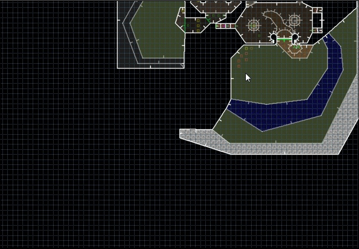
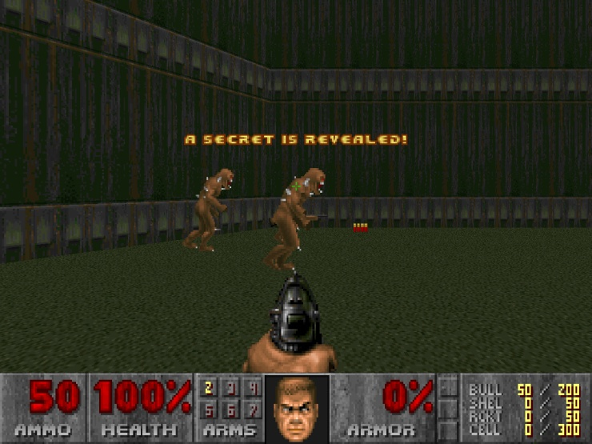
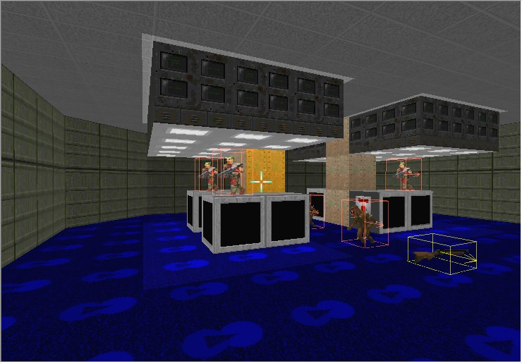
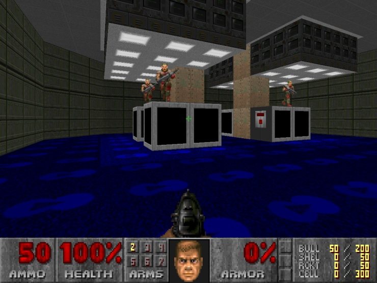

GZDB 允许你从地图中任意有效位置测试地图。其工作方式如下：
假设你想在 (G)ZDoom 中查看那个秘密区域：

将鼠标光标移到你希望在游戏中出现的位置，然后使用"从当前位置测试地图（Test map from current position）"动作（默认按键为 Ctrl-F9）。你将出现在那里：

这同样可以在视觉模式（Visual Mode）下使用。你将出现在视觉模式相机所在的位置：

